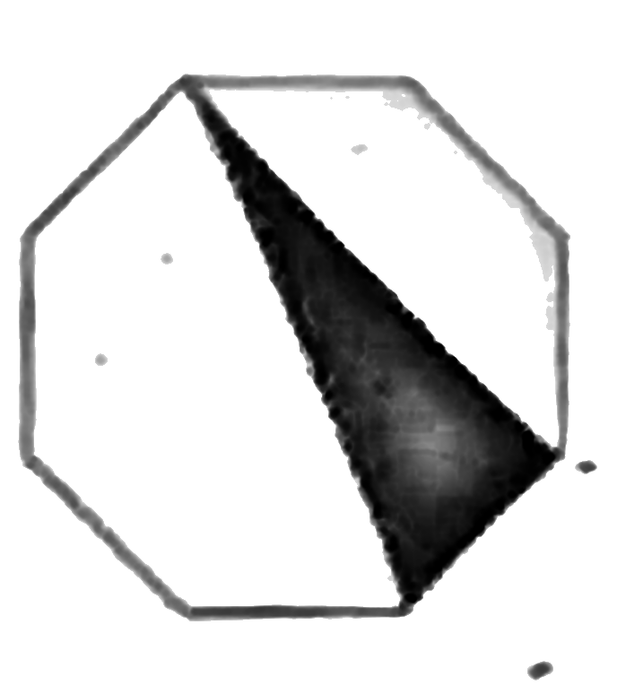
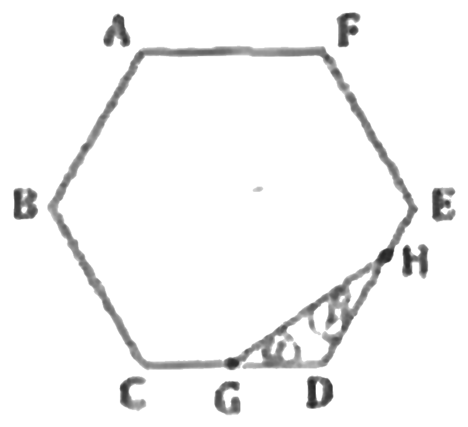

x + y ≠ 3 , 9 − (x+y)²3 − y − x = ?
נתון: −1 < x < 1
איזה מהביטויים הבאים הוא הגדול ביותר?
ב־13 מהמכוניות בשכונה מסוימת מותקן כסא תינוק, ב־15 מהמכוניות בשכונה מותקנת מצלמת דרך. ב־115 מהמכוניות בשכונה יש גם כסא תינוק וגם מצלמת דרך. אם בשכונה ישנן 80 מכוניות בהן אין כסא תינוק וגם אין מצלמת דרך, מה מספר המכוניות הכולל בשכונה?

בסרטוט שלפניכם מתומן משוכלל, שצלעו 2 ס"מ, בו העבירו שני אלכסונים.
על פי נתונים אלו והנתונים שבסרטוט, שטח אפורשטח שחור = ?
⚠ העמוד הזה מטושטש יחסית בסרטון.
x ו־y הם מספרים טבעיים ועוקבים. נתון: z = x² − y² + x − y4
מה מהבאים נכון בהכרח לגבי z?
במפעל להרכבת רהיטים עובדים 5 נגרים – אלון, אדר, ליבנה, אורן וברוש. במהלך יום עבודה הורכבו 14 רהיטים שונים. בהרכבת כל אחד מהרהיטים השתתפו שני נגרים. אם לכל אחד מהנגרים יצא לעבוד לפחות פעם אחת עם כל אחד מהנגרים על הרכבת רהיט כלשהו, כמה פעמים לכל היותר השתתף אורן בהרכבת רהיט כלשהו?
נתון: x, y ו־z הם מספרים עוקבים, x < y < z. 4x − y² + z² = −27
x · y · z = ?

בסרטוט שלפניכם ABCEFD משושה משוכלל. הנקודה G היא אמצע הצלע CD. נתון: HE < GD.
על פי נתונים אלו והנתונים שבסרטוט, מה מהבאים נכון בהכרח?
נתון: x < 0 < y
|yˣ · y−|x||y|2x| = ?
מהי ספרת האחדות של 7¹²?